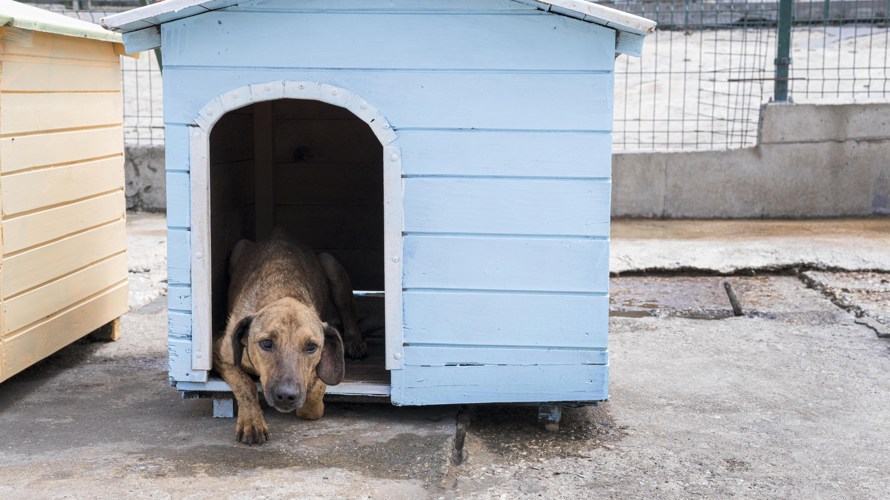

We focus on rehabilitating, and rehoming animals in need. We strive to educate about responsible pet ownership and to create a world where all animals are treated with kindness and respect.
Donate Now


Browse through our adorable and adoptable furry friends!
Visit your pet to win their heart.
Give your pet their own haven close to you.

Adoption Coordinator

Enrichment Specialist

Veterinarian

Volunteer Coordinator
Our purpose is to provide a safe place for abandoned, abused, and neglected animals, offering them the love, care, and medical attention they deserve.
